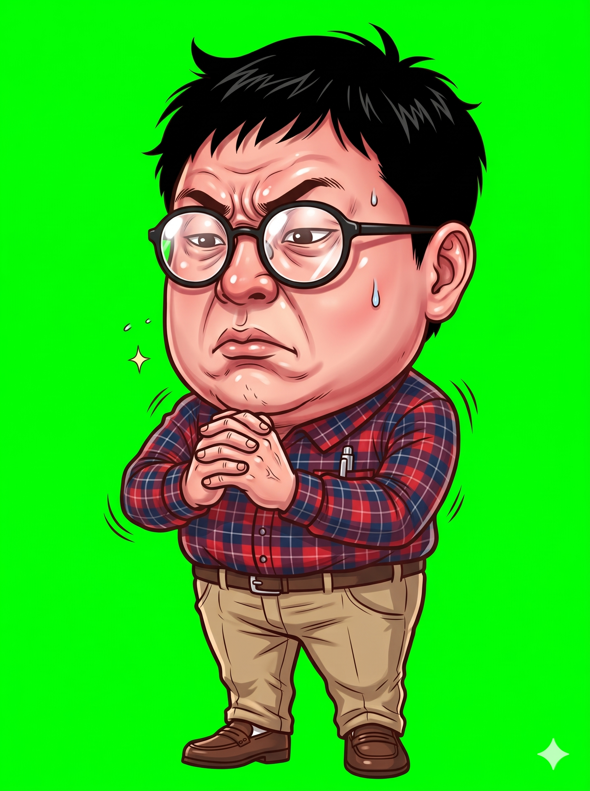
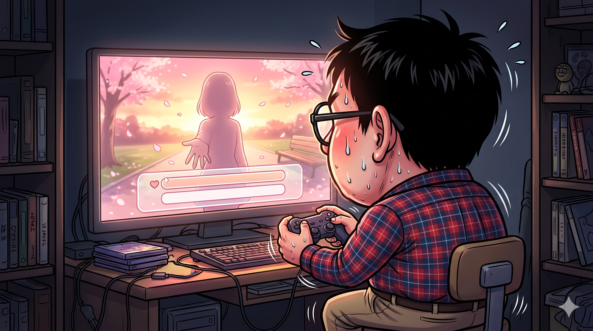
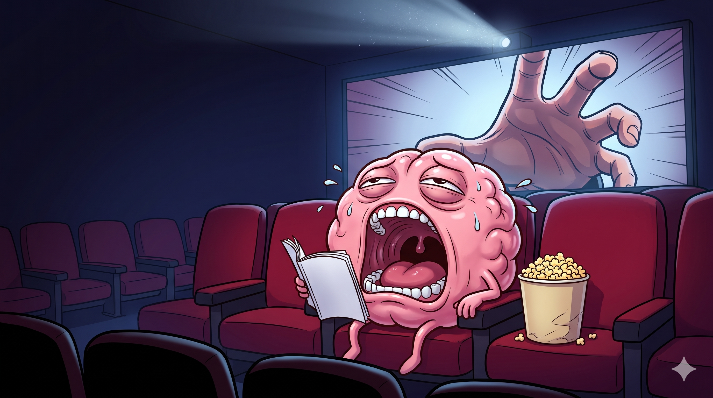
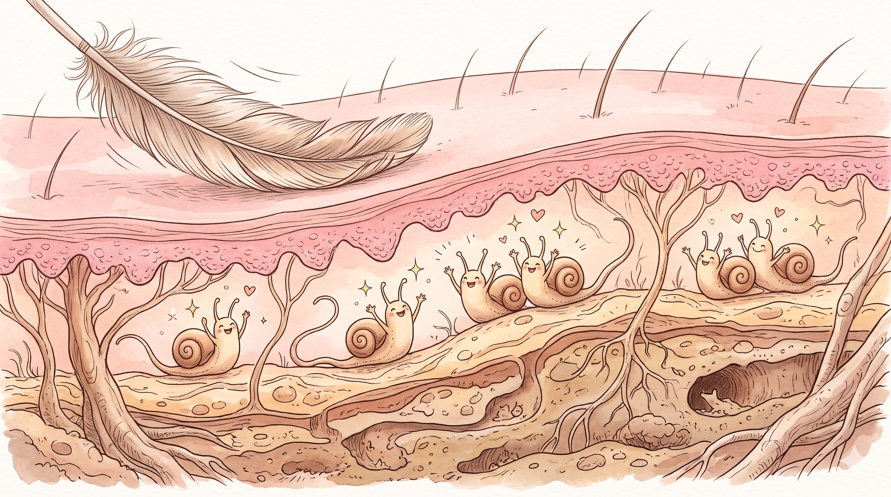
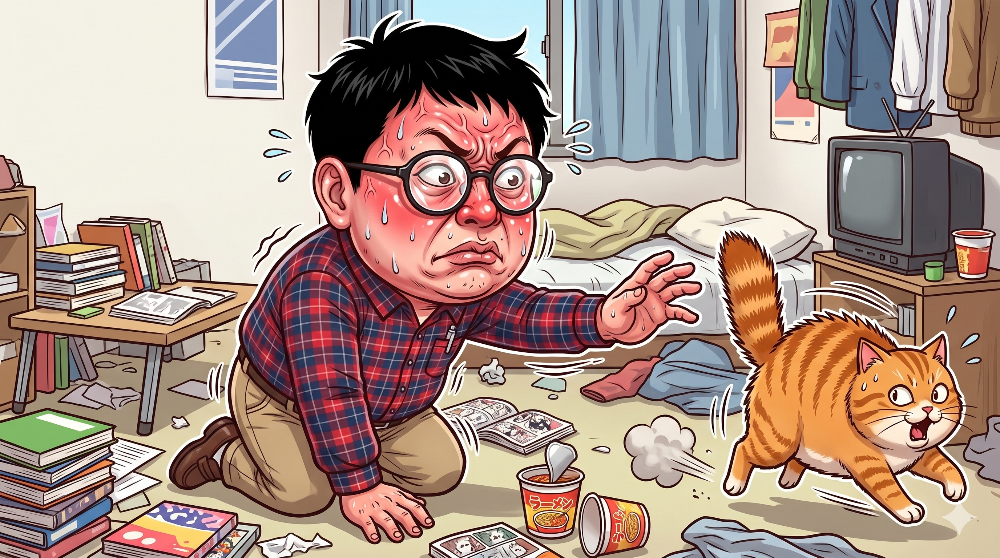
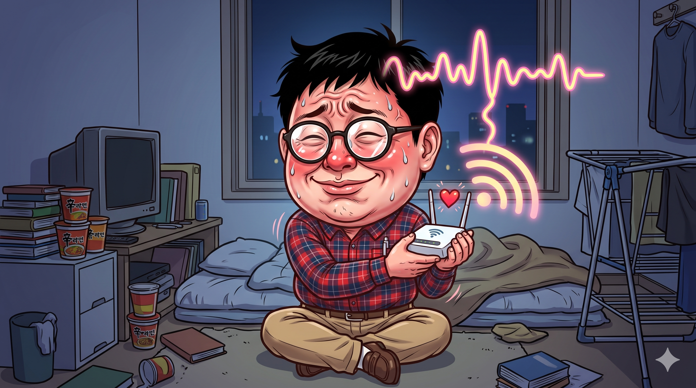
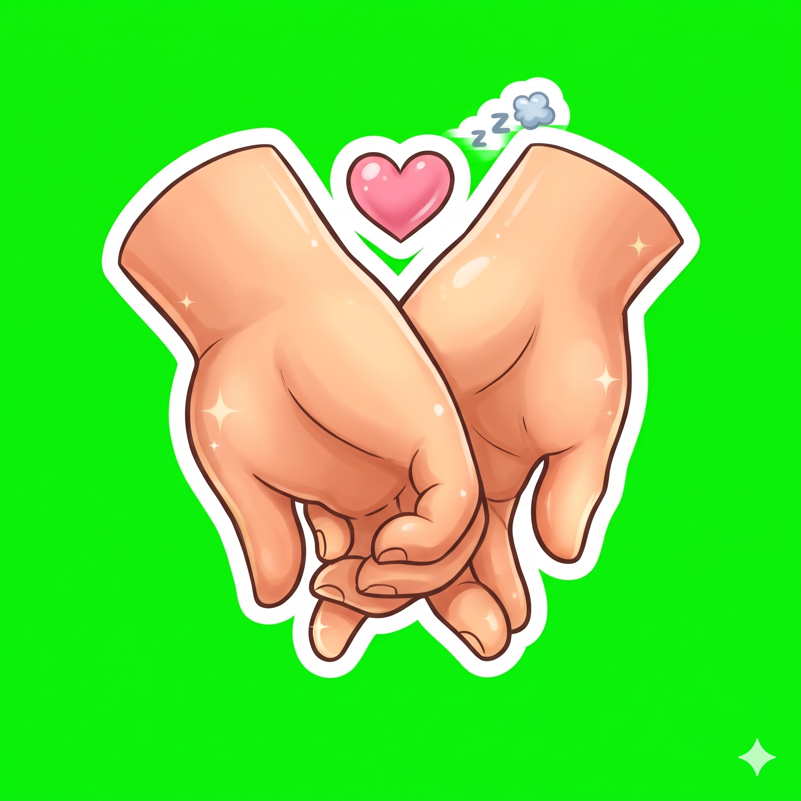

모덕후 ③ 손잡기 — 게임 · 잡지 화보 패러디 — 그림 확인 (24장)
결과(왼쪽)를 첨부한 기준 그림과 비교한다: 얼굴 · 머리 · 옷 · 피부 톤 · 선 굵기 · 과장 정도. 판정은 content/mk03-touch/prompts/jobs/review.json 에 "id": "ok" 또는 "redo: 이유" 로 적는다.
아빠 — 기본 common/dad/normal 확인 전
 결과①
결과① 화풍 앵커
화풍 앵커아빠 — 충격 common/dad/shock 확인 전
아빠 — 당황 common/dad/panic 확인 전
아빠 — 생각 common/dad/think 확인 전
엄마 — 기본 common/mom/normal 확인 전
 결과①화풍 앵커②
결과①화풍 앵커② 채널 프로필 — 오른쪽 위 안경 쓴 여자가 엄마③
채널 프로필 — 오른쪽 위 안경 쓴 여자가 엄마③ 채널 배너 — 맨 오른쪽 팔짱 낀 여자가 엄마
채널 배너 — 맨 오른쪽 팔짱 낀 여자가 엄마컷인 — 아빠 충격 common/cutin/dad-shock 확인 전
모덕후 삼촌 — 기본 (진지) (앞 편 그림 복사, 새로 안 뽑음) modeokhu/normal 확인 전
 결과①화풍 앵커
결과①화풍 앵커모덕후 삼촌 — 레이저 포인터로 가리키며 "자, 진지하다" (앞 편 그림 복사, 새로 안 뽑음) modeokhu/point 확인 전
결과①화풍 앵커②같은 사람 유지용 기준 그림
모덕후 삼촌 — 결론, 팔짱 끼고 의기양양 (앞 편 그림 복사, 새로 안 뽑음) modeokhu/proud 확인 전
삼촌 — "…논문으로." 시선 피하며 안경 고쳐 쓰기 (앞 편 그림 복사, 새로 안 뽑음) modeokhu/fluster 확인 전
모덕후 삼촌 컷인 — 안경 번쩍 (앞 편 그림 복사, 새로 안 뽑음) cutin/uncle-glint 확인 전
삼촌 컷인 — 꿀꺽 (김 서린 안경 · 빨개진 볼) (앞 편 그림 복사, 새로 안 뽑음) cutin/uncle-gulp 확인 전
배경 — 삼촌의 밤 원룸 (책 더미 · 피규어 · 컵라면 · TV 불빛) (앞 편 그림 복사, 새로 안 뽑음) bg/oneroom 확인 전
 결과①화풍 앵커
결과①화풍 앵커삼촌 — 자기 두 손 깍지 끼고 진지하게 바라봄 (무표정 · 땀 한 방울) modeokhu/selfhold 확인 전

결과①화풍 앵커②같은 사람 유지용 기준 그림미연시 화면 패러디 — 노을 공원, 내민 손 실루엣, 선택지 상자 (모니터 앞 삼촌 뒤통수) full/dating-sim 확인 전

결과①화풍 앵커②같이 나오는 사람 기준 그림 (normal)극장 패러디 — 객석의 뇌 캐릭터가 대본을 펼쳐 들고 하품 full/spoiler-brain 확인 전

결과①화풍 앵커과학 잡지 도해 — 척수를 타고 오르는 두 신호 (남의 손 = 반짝 · 내 손 = 회색) full/spine-relay 확인 전
결과①화풍 앵커
피부 단면 도감 — 깃털 붓에 환호하는 느린 신경 캐릭터들 full/slow-nerve 확인 전

결과①화풍 앵커삼촌의 깃털 손길에 털 세우고 도망가는 고양이 full/cat-escape 확인 전

결과①화풍 앵커②같이 나오는 사람 기준 그림 (normal)실험실 패러디 — 번개 버튼 앞 맞잡은 두 손 클로즈업, 뇌 모니터 빨강→파랑 full/shock-lab 확인 전
결과①화풍 앵커
두 사람 머리 위 뇌파 선이 같은 모양으로 겹침 (실루엣 · 맞잡은 손에서 빛) full/brainwave 확인 전
결과①화풍 앵커
삼촌 머리 위 뇌파와 공유기 와이파이 신호가 맞춰짐 full/wifi-sync 확인 전

결과①화풍 앵커②같이 나오는 사람 기준 그림 (normal)현관 — 엄마 · 아빠 손잡고 산책 나가는 뒷모습, 문틈의 삼촌 꿀꺽 full/walk-out 확인 전
소품 — 맞잡은 두 손 아이콘에 하트, 화보처럼 반짝 prop/hands 확인 전

결과① 소품 화풍 앵커 (사람 없는 소품)
소품 화풍 앵커 (사람 없는 소품)